| Larch: X-ray Data Analysis |
Larch provides a number of convenience functions for common line-shapes used in fitting of experimental data. This list is not exhaustive, but can be amended easily. All these functions return either a floating point scalar or array, depending on the input x.
a Gaussian or normal distribution function:
![f(x, \mu, \sigma) = \frac{1}{\sigma\sqrt{2\pi}} e^{[{-{(x-\mu)^2}/{{2\sigma}^2}}]}](../_images/math/4ca75ab2c464fb23614cfe88bc4ca77dcaeb3410.png)
where cen is used for  .
The Full-Width at Half-Maximum is 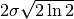,
approximately 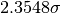
.
The Full-Width at Half-Maximum is 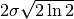,
approximately 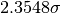
a Lorentzian or Cauchy-Lorentz distribution function:
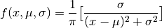
where cen is used for . The Full-Width at Half-Maximum is
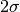.
a Voigt distribution function. The definition used here is
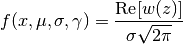
where
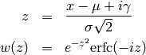
and erfc() is the complimentary error function. As above, cen is
used for here, sigma for  , and gamma for the
parameter 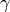. If gamma is left as None, it is set equal
to sigma. For the case when 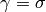, the Full-Width at
Half-Maximum is approximately 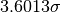.
, and gamma for the
parameter 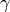. If gamma is left as None, it is set equal
to sigma. For the case when 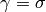, the Full-Width at
Half-Maximum is approximately 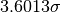.
a pseudo-Voigt distribution function, which is a weighted sum of a
Gaussian and Lorentzian distribution functions with the same values for
cen () and sigma (), and frac setting the
Lorentzian fraction:
pvoigt(x, cen, sigma, frac) = (1-frac)*gaussian(x, cen, sigma) + frac*lorentzian(x, cen, sigma)
a Pearson-7 lineshape. This is another Voigt-like distribution function, defined as
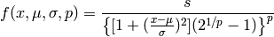
where for cen () and sigma () are as for the
above lineshapes, and expon is 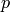, and
where  is the gamma function.
is the gamma function.
Student's t distribution function.
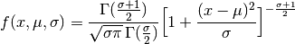
where is the gamma function.
Breit-Wigner-Fano distribution function.
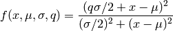
Logistic lineshape, a sigmoidal curve
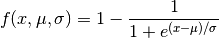
log-normal function
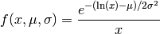
Several builtin special functions can also be used to create lineshapes useful in fitting spectra and other x-ray data. Some of these are detailed in the Table of Useful Line shapes.
Table of Useful Line shapes.
function description gaussian(x, cen, sigma) Gaussian, normal distribution lorentzian(x, cen, sigma) Lorentzian distribution voigt(x, cen, sigma, gamma) Voigt distribution pvoigt(x, cen, sigma, frac) pseudo-Voigt distribution pearson7(x, cen, sigma, expon) Pearson-7 distribution students_t(x, cen, sigma) Student's t distribution breit_wigner(x, cen, sigma, q) Breit-Wigner-Fano distribution logistic(x, cen, sigma) Logistic distribution lognormal(x, cen, sigma) Log-normal distribution arctan(x) Arc-tangent function erf(x) Error function erfc(x) Complemented Error function (1-erf(x)) gammaln(x) log of absolute value of gamma(x)
Other standard special functions (Bessel functions, Legendre polynomials, etc) can be accessed from scipy.special:
from scipy.special import j0 # Bessel function of order 0,
from scipy.special import y1 # Bessel function of second kind of order 1
A host of functions to generate other distribution functions can be accessed from scipy.stats.